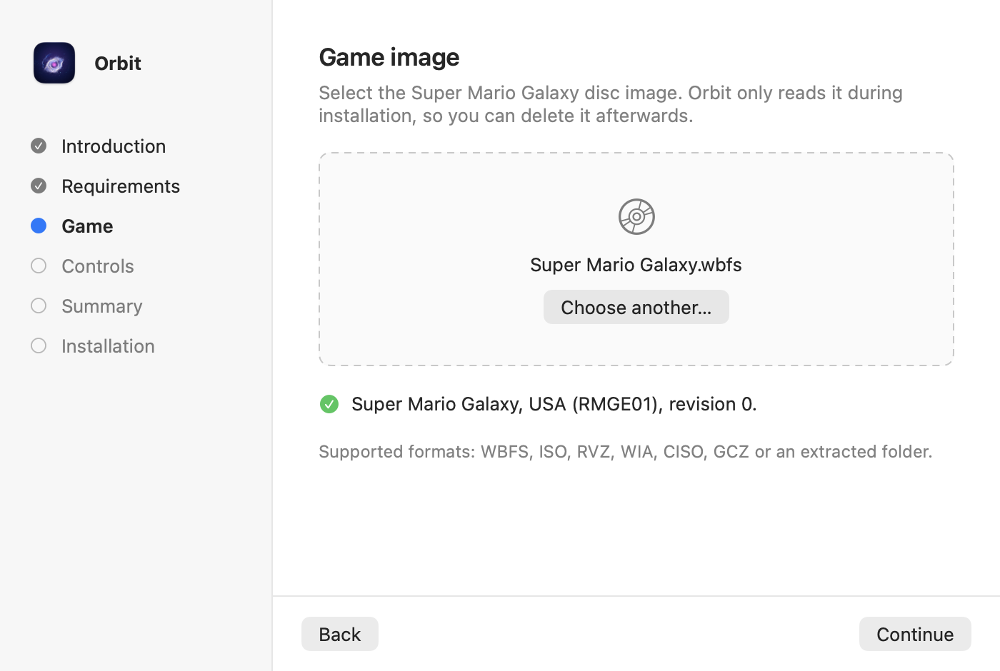
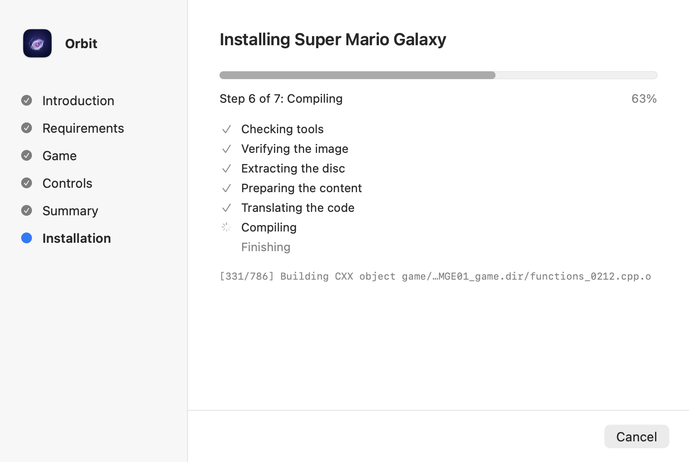
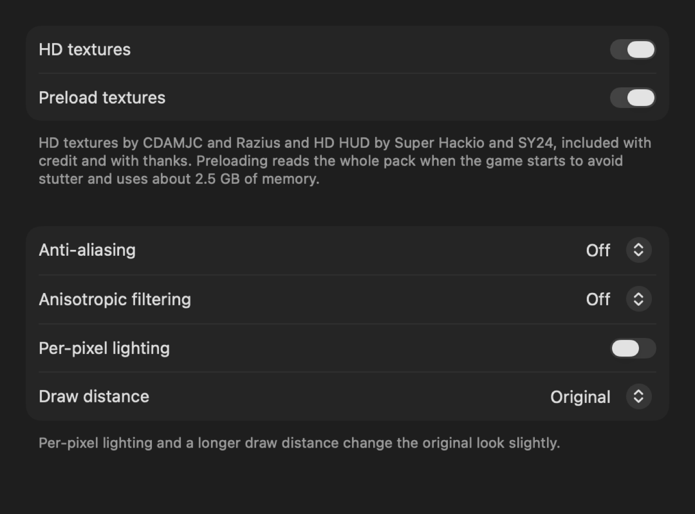
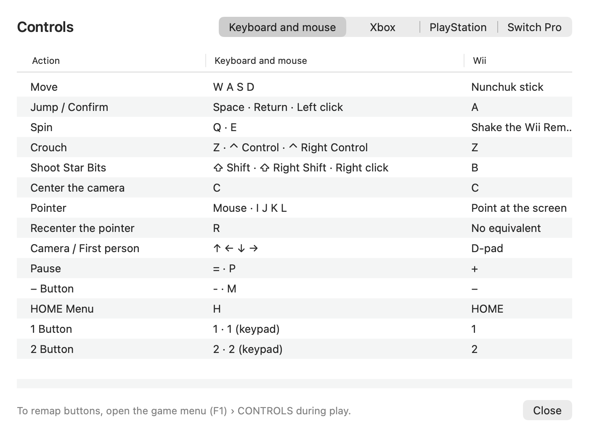

Install Orbit
You need your own copy of Super Mario Galaxy, USA version (RMGE01), revision 0. Orbit only reads it during installation.
-
Download
Download Orbit.dmg, open it and drag Orbit to the Applications folder.
-
Open Orbit
Orbit is not signed with an Apple developer certificate, so macOS blocks the first launch. Open System Settings, go to Privacy & Security and select Open Anyway.
-
Add the game
Drag your disc image into the setup assistant. WBFS, ISO, RVZ, WIA, CISO and GCZ images and extracted folders work.
-
Play
Choose how you want to play. The assistant installs Apple’s command line tools if they are missing and compiles the game in 3 to 15 minutes.
What Orbit includes
- A setup assistant
- It checks your copy of the game, installs Apple’s command line tools when needed, compiles the game and applies recommended settings.
- Native full screen
- The game opens in its own Space. The green title bar button or Control-Command-F switches it to a window.
- Any display shape
- The picture adapts to the display, including MacBook displays taller than 16:9, without stretched menus.
- HD textures
- Community HD textures and an HD HUD are included and preloaded to avoid stutter.
- Your controller
- Keyboard and mouse, Xbox and PlayStation controllers and Switch Pro controllers. Real Wii Remotes over Bluetooth are experimental.
- English and Spanish
- The app follows the language of your Mac.
The app
Orbit follows the look of macOS in light and dark mode.




Credits
- Nebula by keepvaibin. Orbit is a fork of Nebula. The recompiler, the runtime and the game support are Nebula’s work.
- HD textures by CDAMJC and Razius.
- HD HUD by Super Hackio and SY24.
- The projects Nebula builds on, and glslang, SPIRV-Tools and SPIRV-Cross for shader translation. See the third-party notices.
- Dolphin, whose custom texture format Orbit reads, and GameTDB, where the app downloads box art.
- Like Nebula, the macOS port was built with AI coding agents (Anthropic’s Claude), directed, reviewed and tested by the project’s author.